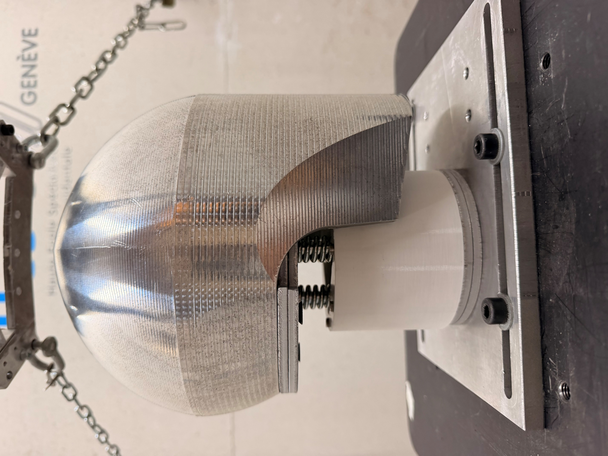

Data analysis · Machine learning · Energy
Wind-Turbine Icing & Energy Forecasting
>96%icing classification accuracy
2.2–7.6 MWhestimated energy loss
Python
Mechanical Engineer · Fluid Mechanics
I combine CFD, wind-tunnel testing and data analysis to understand complex flows and validate engineering models.


Selected work
Concise evidence of the problem, method, result and personal contribution.
Data analysis · Machine learning · Energy
Python

Aerodynamics · CFD · Wind-tunnel testing
ANSYS Fluent · Python

Aerodynamics · Parametric CFD
ANSYS Fluent · Python

Environmental CFD · Multiphase flow
ANSYS Fluent · Python

Aerodynamics · Wind-tunnel testing · CAD
3DEXPERIENCE · 3D printing · Python

Experimental aerodynamics · Signal processing
Python

Experimental mechanics · Fracture
MATLAB · Ncorr

Biomechanics · Mechanical design · Impact testing
Autodesk Fusion 360 · Python

Aerodynamics · Analytical modelling
MATLAB

Finite elements · Structural mechanics
Abaqus · Python · Excel
Profile
M.Sc. in Mechanical Engineering with a Fluid Mechanics specialisation. My projects span aerodynamic correlation, multiphase CFD, experimental pressure measurements, machine-learning forecasting and finite-element analysis.
I focus on traceable methods: mesh convergence, uncertainty awareness, model limitations and clear quantitative results.
Contact
CFD · Aerodynamics · Experimental testing · Data analysis
thomaslepere33@gmail.com